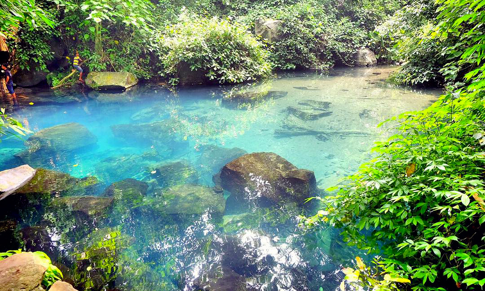

Situ Biru Cilembang
Situ Biru Cilembang merupakan salah satu tempat wisata alam yang terletak di Kabupaten Sumedang. Tempat wisata alam satu ini masih jarang diketahui banyak orang, padahal memiliki potensi alam yang luar biasa indah.
Situ Biru Cilembang lokasinya tersembunyi karena dikelilingi oleh pepohonan yang rindang dan berada di bawah tebing bebatuan. Yang membuat tempat wisata alam ini spesial adalah warna air dari danau ini berwarna kebiru-biruan.
Itulah kenapa, tempat wisata alam yang berlokasi di kawasan Dusun Curug, Desa Hariang, Kecamatan Buahdua, Kabupaten Sumedang, Jawa Barat ini bernama Situ Biru Cilembang.
Dilansir dari berbagai sumber, pada awalnya tempat ini bernama Situ Cilembang yang merupakan sumber mata air yang berukuran lebih luas dari yang ada saat ini. Pada tahun 1982, ketika terjadi letusan Gunung Galunggung, bukit di atas Situ Cilembang ini mengalami longsor.
Material longsoran yang didominasi bebatuan ini menimbun sebagian sumber mata air Cilembang ini. Hingga saat ini, Situ Cilembang dikelilingi bebatuan termasuk di bawah situnya juga banyak bebatuan dengan berbagai ukuran. Kedalaman Situ Cilembang ini sekitar tiga meter.
Fungsi situ Cilembang sebagai sumber mata air, tidak berubah. Air dari Situ Cilembang ini menjadi sumber mata air bagi penduduk sekitar dan sumber pengairan lahan pesawahan yang terletak di hilirnya.
Debit air yang keluar dari mata air Situ Cilembang ini tidak mengalami perubahan baik di musim hujan maupun musim kemarau. Situ Cilembang ini menjadi tempat hidup beberapa jenis ikan seperti ikan nilem dan wader. Bahkan, pernah ada yang melihat kura-kura air tawar yang muncul ke permukaan.
Karena memiliki warna air yang kebiru-biruan, Situ Biru Cilembang ini menjadi daya tarik untuk dikunjungi dan menjadi tempat berwisata. Ditambah dengan suasana lingkungan sekitarnya yang masih asri dan alami, menambah ketertarikan pengunjung untuk menenangkan pikiran di sini.
Dikarenakan Situ Biru Cilembang ini merupakan sumber air bagi penduduk sekitar, pengunjung situ ini sebenarnya tidak diperkenankan untuk berenang di Situ Biru Cilembang. Pengunjung hanya bisa melihat dan menikmati indahnya suasana Situ Biru Cilembang dari dekat.
Di sebelah timur situ atau di luar rimbunnya pepohonan, ada fasilitas penunjang wisata Situ Bitu Cilembang. Fasilitas yang bebas dan bisa digunakan oleh pengunjung wisata Situ Biru Cilembang.
Ada kolam berukuran besar dengan air bersumber dari Situ Biru Cilembang dimana pengunjung bisa berenang dan bermain air dengan bebas. Namun, harus hati-hati karena di beberapa tempat terdapat batu-batu besar menghiasi kolam renang ini.
Kedalaman kolam ini tidak terlalu dalam sehingga bisa dijadikan tempat bermain anak-anak. Di sini juga tersedia penyewaan ban bekas yang bisa digunakan ketika bermain air.
Di sebelah timur kolam renang ini ada tambahan kolam yang berisi ikan yang biasa digunakan sebagai terapi ikan. Jadi, pengunjung Situ Biru Cilembang bisa juga ikutan terapi ikan di sini.
Selain itu, di sini juga tersedia saung-saungan atau tempat untuk berkumpul dan beristirahat. Kemudian, terdapat juga mushola dan toilet di kawasan wisata Situ Biru Cilembang ini. Dan bagi pengunjung yang memerlukan makanan dan minuman ada juga warung yang menyediakan berbagai jenis makanan dan minuman.
Kawasan wisata Situ Biru Cilembang biasanya banyak dikunjungi wisatawan di akhir pekan, seperti hari Sabtu dan Minggu. Untuk hari-hari biasa, tidak terlalu ramai. Namun, untuk kunjungan di hari Selasa dan Jumat, tidak diperbolehkan karena ada pantangan untuk tidak memasuki area Situ Biru Cilembang.
Jam Buka Danau Biru Situ Cilembang
Jam operasional dari Situ Biru Cilembang setiap hari Senin hingga Minggu, mulai pukul 07.00 hingga 16.00 waktu setempat.